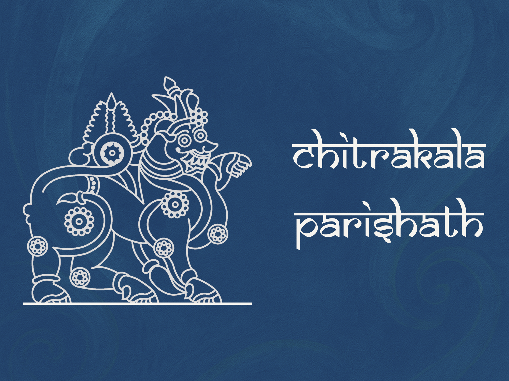

Karnataka Chitrakala Parishath
A digital companion that enhances art discovery and visitor engagement at KCP Museum.
The app reimagines the experience by blending navigation, storytelling, and accessibility into one cohesive platform.
View Case Study